คู่มือการใช้งาน
Thai Chemicals Storage — Enterprise Resource Planning
คู่มือฉบับนี้อธิบายวิธีใช้งานระบบสำหรับพนักงานทุกตำแหน่ง ตั้งแต่การเข้าสู่ระบบ
การสร้างใบเสนอราคา Scope of Work ใบส่งมอบสินค้า ไปจนถึงการจัดการผู้ใช้และการตั้งค่าระบบ
สารบัญ เนื้อหาในคู่มือ1 การเข้าสู่ระบบ
2 ภาพรวมหน้าจอและเมนู
3 แดชบอร์ด
4 ใบเสนอราคา (Quotations)
5 Scope of Work
6 ใบส่งมอบสินค้า (Delivery Orders)
7 คลังสินค้า (Products)
8 ลูกค้า (Customers)
9 Template ใบเสนอราคา
10 จัดการผู้ใช้งาน / บทบาทและสิทธิ์ / บันทึกการใช้งาน (สำหรับผู้ดูแลระบบ)
11 ตั้งค่า (Settings)
12 การพิมพ์เอกสารเป็น PDF
13 คำถามพบบ่อย (FAQ)
หมายเหตุ: เมนูที่แต่ละคนมองเห็นขึ้นอยู่กับ สิทธิ์ (Permission) ของบทบาทที่ผู้ดูแลระบบกำหนดให้
หากไม่เห็นเมนูใดตามคู่มือ แปลว่าบัญชีของคุณไม่มีสิทธิ์ส่วนนั้น — ติดต่อผู้ดูแลระบบ
1 การเข้าสู่ระบบ
เปิดเว็บเบราว์เซอร์ (แนะนำ Google Chrome หรือ Microsoft Edge) แล้วไปที่ https://tcs-erp-nine.vercel.app
กรอก ชื่อผู้ใช้หรืออีเมล และ รหัสผ่าน ที่ได้รับจากผู้ดูแลระบบ
กดปุ่ม เข้าสู่ระบบ
ไม่มีการสมัครสมาชิกเอง: บัญชีผู้ใช้ทุกบัญชีถูกสร้างโดยผู้ดูแลระบบเท่านั้น
หากยังไม่มีบัญชีหรือลืมรหัสผ่าน ให้ติดต่อผู้ดูแลระบบเพื่อสร้างบัญชีหรือรีเซ็ตรหัสผ่านให้
เซสชันหมดอายุ: ระบบจะจดจำการเข้าสู่ระบบไว้ 7 วัน หากพ้นกำหนดหรือบัญชีถูกปิดใช้งาน
ระบบจะแจ้ง "เซสชันหมดอายุ กรุณาเข้าสู่ระบบใหม่" — ให้กลับไปหน้าเข้าสู่ระบบแล้วลงชื่อเข้าใช้อีกครั้ง
กรอกรหัสผ่านผิดหลายครั้ง: เพื่อความปลอดภัย หากกรอกรหัสผ่านผิดเกิน 5 ครั้งภายใน 15 นาที
ระบบจะพักการเข้าสู่ระบบของบัญชีนั้นชั่วคราว พร้อมแจ้งว่าต้องรออีกกี่นาที — เมื่อครบเวลาแล้วลองใหม่ได้ตามปกติ
(เข้าสู่ระบบสำเร็จเมื่อไหร่ ตัวนับจะเริ่มใหม่ พิมพ์ผิดบ้างเล็กน้อยไม่มีผลอะไร)
การออกจากระบบ
คลิกรูปโปรไฟล์มุมขวาบน แล้วเลือก ออกจากระบบ
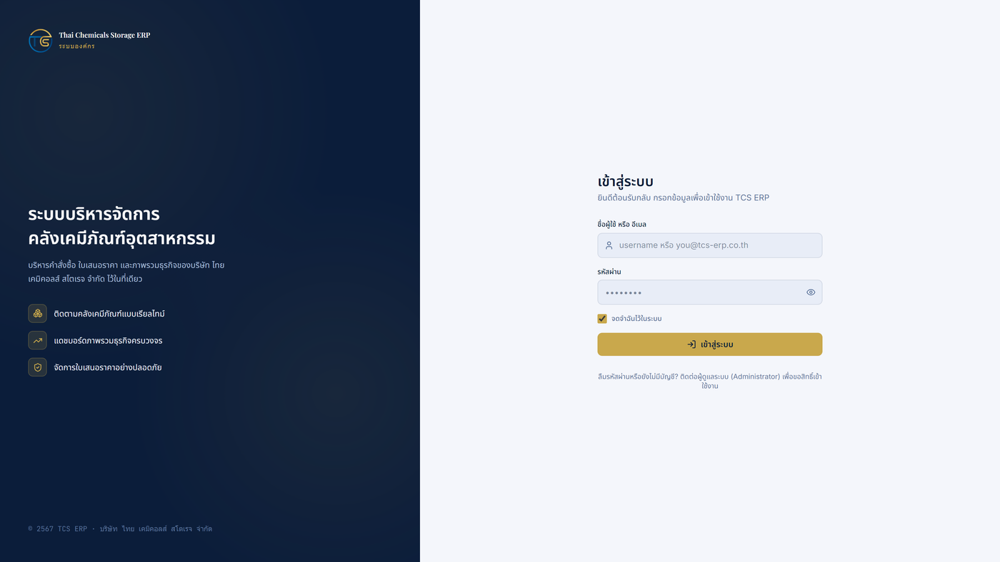
หน้าเข้าสู่ระบบของ TCS ERP
2 ภาพรวมหน้าจอและเมนูแถบเมนูด้านซ้าย (Sidebar)
กลุ่มเมนู เมนู หลัก แดชบอร์ด งานขาย ใบเสนอราคา • Scope of Work • ใบส่งมอบสินค้า • Template ใบเสนอราคา • ลูกค้า คลังสินค้า คลังสินค้า (สินค้าและหมวดหมู่) การจัดการระบบ จัดการผู้ใช้งาน • บทบาทและสิทธิ์ • บันทึกการใช้งาน ล่างสุด ตั้งค่า
ปุ่มลูกศรด้านบนของแถบเมนูใช้ย่อ/ขยายแถบได้ บนมือถือให้กดปุ่มเมนู (☰) มุมซ้ายบน
แถบด้านบน (Topbar)
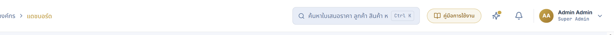
แถบด้านบน: ช่องค้นหา • ปุ่มคู่มือการใช้งาน (สีทอง) • มีอะไรใหม่ • กระดิ่งแจ้งเตือน • เมนูผู้ใช้
ส่วนประกอบ การใช้งาน ช่องค้นหา ค้นหาใบเสนอราคา ลูกค้า สินค้า Scope of Work ผู้ใช้ และหน้าต่าง ๆ ได้จากที่เดียว
กดคีย์ลัด Ctrl + K เพื่อเปิดค้นหาได้ทันที กระดิ่งแจ้งเตือน แจ้งเตือนเหตุการณ์ที่เกี่ยวกับคุณ เช่น ใบเสนอราคารออนุมัติ ผลอนุมัติ เอกสาร Scope of Work ที่ส่งถึงคุณ —
คลิกที่รายการเพื่อเปิดเอกสารนั้นทันที ไอคอน "มีอะไรใหม่" (✦) ประกาศฟีเจอร์ใหม่ของระบบ จุดสีทองแปลว่ามีประกาศที่ยังไม่ได้อ่าน รูปโปรไฟล์ เมนูไปหน้าตั้งค่า และออกจากระบบ
ภาษา
ระบบเป็นภาษาไทยโดยค่าเริ่มต้น เปลี่ยนเป็นภาษาอังกฤษได้ที่ ตั้งค่า → แท็บโปรไฟล์ → ภาษา
(เอกสารพิมพ์เช่นใบเสนอราคายังคงเป็นภาษาไทยเสมอ ไม่เปลี่ยนตามภาษาหน้าจอ)
3 แดชบอร์ดหน้าแรกของระบบ สรุปภาพรวมงานขายทั้งบริษัทแบบเรียลไทม์จากข้อมูลจริง
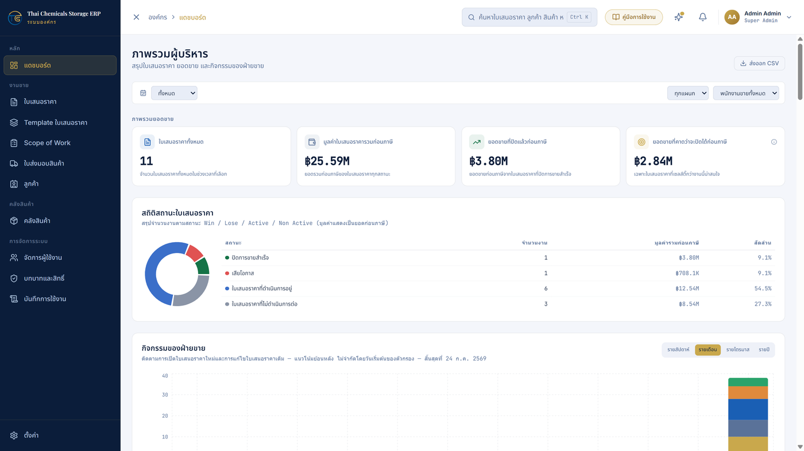
หน้าแดชบอร์ด — การ์ดสรุป ตัวกรอง และสถิติสถานะใบเสนอราคา
ส่วนหลักบนหน้า
การ์ดสรุป 4 ใบ — มูลค่ารวม จำนวนใบเสนอราคา อัตราชนะงาน และยอดคาดการณ์ (ทุกยอดเงินเป็นมูลค่าก่อนภาษี )สรุปสถานะใบเสนอราคา — สัดส่วน Won / Lose / Active / Non-Activeสถิติกิจกรรมการขาย — จำนวนการสร้าง/แก้ไข/เปลี่ยนสถานะ แยกรายสัปดาห์ เดือน ไตรมาส ปี และรายพนักงานขายรายละเอียดกิจกรรมล่าสุด — เหตุการณ์ล่าสุดพร้อมลิงก์คลิกเปิดใบเสนอราคาที่เกี่ยวข้องส่วนเสริมด้านล่าง — อันดับพนักงานขาย งานที่ต้องติดตาม รายการรออนุมัติ จำนวนเอกสาร Scope of Work ฯลฯ
ตัวกรอง
ด้านบนของหน้ามีตัวกรอง ช่วงวันที่ / พนักงานขาย / แผนก — ข้อมูลส่วนใหญ่จะเปลี่ยนตามตัวกรองทันที
(บางกราฟที่เป็นภาพรวมย้อนหลังจะระบุไว้บนการ์ดว่าไม่ใช้ตัวกรองบางตัว)
เคล็ดลับ: ใบเสนอราคาที่ถูกกด "แก้ไข (Rewrite)" หลายรอบ ระบบจะนับเป็นงานเดียว (ฉบับล่าสุด)
ตัวเลขบนแดชบอร์ดจึงไม่นับซ้ำ
4 ใบเสนอราคา (Quotations)การสร้างใบเสนอราคาใหม่
ไปที่เมนู ใบเสนอราคา แล้วกด สร้างใบเสนอราคา
เลือกประเภทงาน (Job Type) — เช่น Wet Scrubber, Bag Filter, FRP Tank ฯลฯเลือก Template (ถ้ามีสำหรับประเภทงานนั้น) — ระบบจะเติมรายการสินค้า สเปค และเงื่อนไขมาตรฐานให้ล่วงหน้า หรือเลือกเริ่มจากแบบว่างก็ได้ดูตัวอย่าง แล้วกดยืนยันเพื่อเข้าสู่ฟอร์มใบเสนอราคา
การกรอกฟอร์ม
ข้อมูลลูกค้า — พิมพ์เอง หรือกดช่อง "เลือกลูกค้า" เพื่อดึงข้อมูลจากฐานลูกค้าที่บันทึกไว้มาเติมให้อัตโนมัติรายการสินค้า — เพิ่มจากคลังสินค้า (ปุ่มเลือกสินค้า) หรือพิมพ์รายการเอง แต่ละรายการใส่สเปคย่อยและหมายเหตุได้ไม่จำกัด
และเพิ่มบรรทัด "Section" เพื่อคั่นหมวดรายการได้ส่วนลดและ VAT — ระบบคำนวณยอดรวมและภาษีให้อัตโนมัติกด บันทึก เพื่อเก็บเป็นฉบับร่าง (Draft)
ขั้นตอนการอนุมัติ (Workflow)
ร่าง (Draft) →
ส่งขออนุมัติ →
อนุมัติ / ปฏิเสธ →
ส่งให้ลูกค้า →
ลูกค้าตอบรับ / ปฏิเสธ →
Won / Lost
ปุ่มที่กดได้ในแต่ละสถานะขึ้นอยู่กับสิทธิ์ของคุณ (เช่น เฉพาะผู้อนุมัติจึงเห็นปุ่มอนุมัติ)
การปฏิเสธ/ยกเลิก ระบบบังคับให้ระบุเหตุผลเสมอ และทุกการเปลี่ยนสถานะถูกบันทึกไว้ในประวัติของใบ
ผู้เกี่ยวข้องจะได้รับการแจ้งเตือนที่กระดิ่งอัตโนมัติทุกการเปลี่ยนสถานะ
การแก้ไขและทำสำเนา
ทำสำเนา — สร้างใบใหม่เลขที่ใหม่จากเนื้อหาใบเดิมแก้ไข (Rewrite) — สร้าง "ฉบับแก้ไข" ต่อท้ายเลขเดิม เช่น QT-xxxx-R1, -R2
ใช้เมื่อต้องแก้ใบที่ส่งไปแล้ว ฉบับเดิมยังอยู่ครบเพื่อการตรวจสอบฉบับแก้ไขมีการ์ด หมายเหตุการแก้ไข (Revision Note) พร้อมปุ่มให้ระบบสรุปให้อัตโนมัติว่าแก้อะไรไปบ้าง แล้วแก้ข้อความเองต่อได้
สิทธิ์การมองเห็น: หากบัญชีของคุณไม่มีสิทธิ์ "ดูใบเสนอราคาของผู้อื่น"
หน้ารายการจะแสดงเฉพาะใบที่คุณสร้างเองเท่านั้น
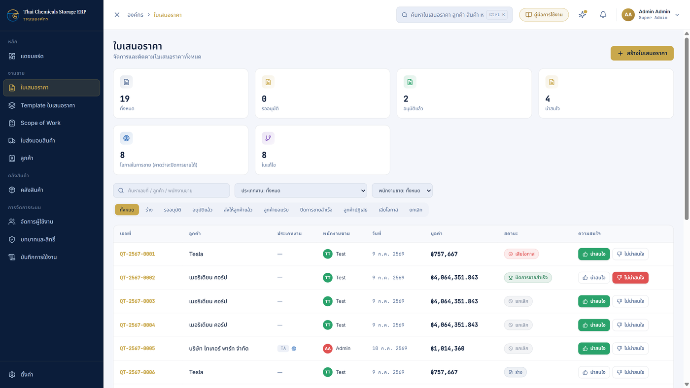
หน้ารายการใบเสนอราคา — การ์ดสรุป ตัวกรองสถานะ และปุ่มสร้างใบเสนอราคา (มุมขวาบน)
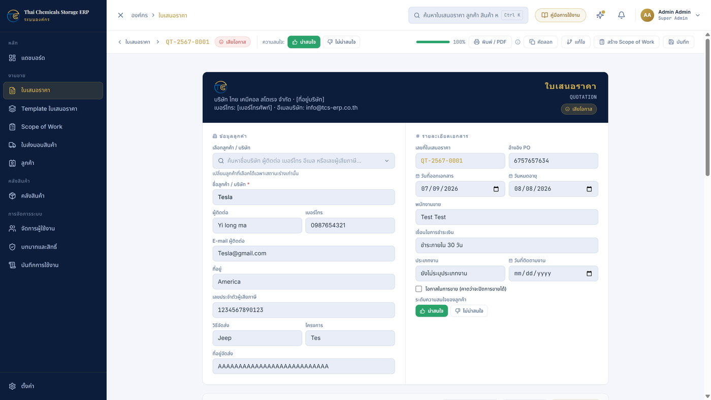
หน้ารายละเอียดใบเสนอราคา — ข้อมูลลูกค้า รายละเอียดเอกสาร และแถบเครื่องมือด้านบน
(พิมพ์ / คัดลอก / แก้ไข / สร้าง Scope of Work / บันทึก)
5 Scope of Workเอกสารขอบเขตงานที่สร้างต่อจากใบเสนอราคา ใช้ยืนยันรายละเอียดงานกับลูกค้าและแจ้งแผนกต่าง ๆ ภายใน (ไม่แสดงราคา)
การสร้าง
เปิดใบเสนอราคาที่ต้องการ แล้วกดปุ่ม สร้าง Scope of Work บนแถบเครื่องมือ
พิมพ์เลขที่เอกสารเอง (บังคับกรอก) — ระบบไม่ออกเลขให้อัตโนมัติแล้ว กำหนดรูปแบบได้อิสระตามที่บริษัทใช้จริง
(เช่น PQ202607-15-LI-SK) ระบบจะตรวจสอบให้ทันทีว่าเลขไม่ซ้ำกับใบอื่น ถ้าซ้ำจะแจ้งเตือนและไม่ให้บันทึกข้อมูลลูกค้าและรายการสินค้าถูกคัดลอกมาจากใบเสนอราคาให้ทันที — แก้ไขใน Scope of Work ได้โดยไม่กระทบใบเสนอราคาต้นทาง
(หากใบเสนอราคามีแก้ไขภายหลัง ใช้ปุ่ม อัปเดตข้อมูลจากใบเสนอราคา )
เกี่ยวกับเลขที่เอกสาร: แก้เลขได้ในช่อง "เลขที่เอกสาร (รหัสงาน)" เฉพาะตอนยังเป็นฉบับร่าง —
เอกสารที่อนุมัติแล้วเลขถูกล็อกถาวร • กด แก้ไข (Rewrite) ระบบต่อท้าย -R1, -R2 จากเลขเดิมให้อัตโนมัติ •
กด ทำสำเนา ระบบจะถามเลขใหม่สำหรับสำเนา • ใบเก่าที่มีเลขอัตโนมัติรูปแบบเดิมใช้ต่อได้ตามปกติ
ส่วนที่ต้องกรอก
รายการตรวจสอบ (Checklist) — ติ๊กข้อกำหนดเอกสาร/การส่งมอบแต่ละกลุ่ม เช่น Test Report, การขนส่ง ฯลฯเงื่อนไขการชำระเงิน — เพิ่มงวดได้หลายงวด แต่ละงวดระบุ % ชื่องวด วิธีชำระ (Cash/Credit) และจำนวนวันเครดิต
มีชุดสำเร็จรูปให้เลือกด่วน ระบบตรวจว่ารวมกันครบ 100%เอกสารส่งถึง — ติ๊กแผนกผู้รับ แล้วเลือก "คนจริง" ในแผนกนั้น จากนั้นกด
ส่งอีเมลแจ้งผู้รับเอกสาร — ผู้รับจะได้รับอีเมล + การแจ้งเตือนในระบบ และเห็นเอกสารนี้ในหน้า Scope of Work ของตนเอง
พิมพ์ข้อความเพิ่มเติมถึงผู้รับได้ในช่องที่กำหนดผู้ลงนาม / วันส่งมอบ / ข้อมูลจัดส่ง-วางบิล — กรอกตามจริง
การขออนุมัติ สถานะ และการพิมพ์
บันทึกเป็น Draft ได้เรื่อย ๆ เมื่อข้อมูลครบและผ่านการตรวจของระบบแล้วจึงกด ส่งขออนุมัติ
— เอกสารเข้าสถานะ รออนุมัติ (ล็อกชั่วคราว ถอนคำขอกลับมาแก้ได้)
ผู้มีสิทธิ์อนุมัติกด อนุมัติ (เป็น Final ชื่อผู้อนุมัติถูกบันทึกอัตโนมัติ)
หรือ ปฏิเสธ พร้อมระบุเหตุผล (ตีกลับเป็นฉบับร่าง) — มีแจ้งเตือนในระบบทุกขั้น
เอกสาร Final แก้ไขไม่ได้อีก — ต้องกด แก้ไข (Rewrite) สร้างฉบับใหม่เท่านั้น
ยกเว้น เลข PO, ผู้รับเอกสาร, ข้อความถึงผู้รับ และไฟล์แนบ ที่ยังบันทึกเพิ่มได้เสมอ (ข้อมูลติดตามผล มักมาหลังอนุมัติ)
พิมพ์/บันทึก PDF ได้จากปุ่มพิมพ์ — เอกสารไม่แสดงราคาใด ๆ
มี ทำสำเนา (ระบบถามเลขที่เอกสารใหม่) และ แก้ไข (Rewrite)
พร้อมสรุปการแก้ไขอัตโนมัติ เช่นเดียวกับใบเสนอราคา
การติดตามเลข PO (ทวง PO)
หน้ารายการมีป้ายส้ม "ยังไม่มี PO" บนงานที่ยังไม่กรอกเลขใบสั่งซื้อ พร้อมปุ่มกรอง
เฉพาะที่ยังไม่มี PO และการ์ดสรุปจำนวน (Dashboard ก็มีตัวนับนี้ในการ์ด Scope of Work)
ปุ่ม ทวงเลข PO ในหน้าเอกสาร (แสดงเมื่อยังไม่มีเลข PO) — กดแล้วระบบส่งแจ้งเตือน
ในกระดิ่งถึงพนักงานขายของงานนั้นทันที กดซ้ำได้ถ้ายังเงียบ ทุกครั้งถูกบันทึกในประวัติการใช้งาน
ได้เลข PO จากลูกค้าเมื่อไหร่ กรอกในช่อง "เอกสารใบสั่งซื้อเลขที่ (PO)" แล้วกดบันทึกได้เลย — แม้เอกสารจะ Final แล้วก็ตาม
เมนู Scope of Work ในแถบด้านซ้ายใช้เปิดดูรายการทั้งหมด (การสร้างยังทำจากหน้าใบเสนอราคาเท่านั้น)
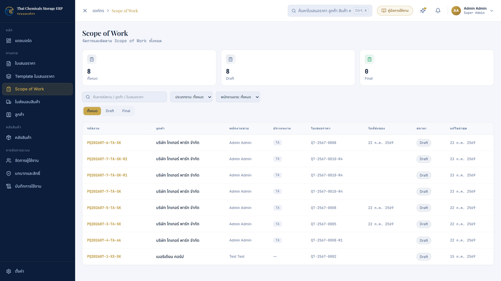
หน้ารายการ Scope of Work
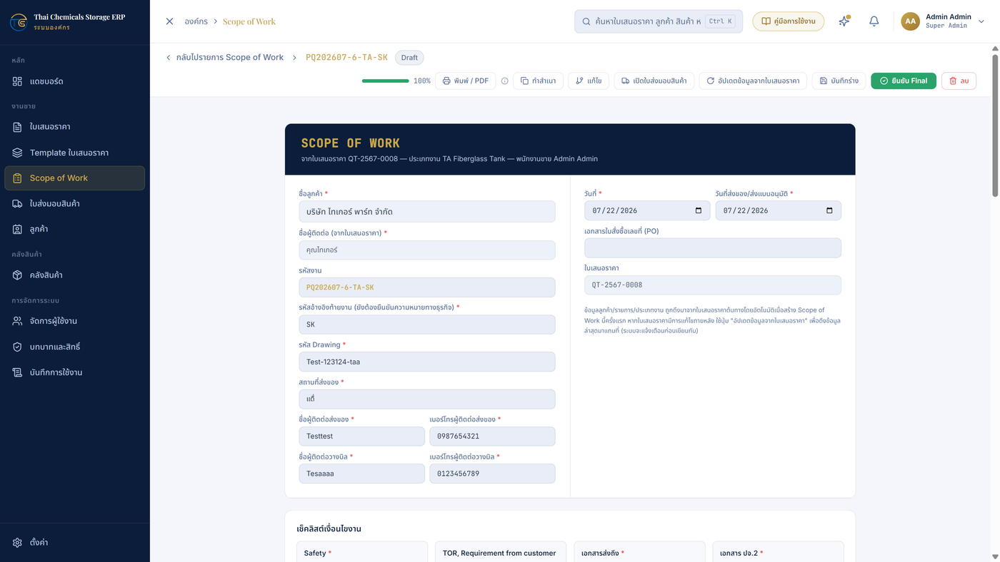
หน้ารายละเอียด Scope of Work — ข้อมูลงาน/ลูกค้า และแถบเครื่องมือ
(พิมพ์ / ทำสำเนา / แก้ไข / ทวงเลข PO / เปิดใบส่งมอบสินค้า / อัปเดตข้อมูลจากใบเสนอราคา / ส่งขออนุมัติ)
6 ใบส่งมอบสินค้า (Delivery Orders)เอกสาร "ใบส่งมอบสินค้าและบริการ" (ฟอร์มบริษัท FM-SL-05) สร้างต่อจาก Scope of Work
ใช้ส่งมอบสินค้า/งานบริการเป็นรายงวดตามเงื่อนไขการชำระเงิน
การสร้างและกรอกข้อมูล
เปิด Scope of Work ที่ต้องการ แล้วกด สร้างใบส่งมอบสินค้า
(ถ้ามีอยู่แล้วปุ่มจะเปลี่ยนเป็น "เปิดใบส่งมอบสินค้า")
ระบบสร้าง การ์ดหนึ่งใบต่อหนึ่งงวดชำระเงิน โดยอัตโนมัติ — งวดมัดจำ (Down Payment / เงินมัดจำ)
จะไม่มีการ์ด เพราะเป็นเงินจ่ายล่วงหน้า ไม่ใช่การส่งมอบ
ในแต่ละงวด: ติ๊กเลือกสินค้า ที่ส่งมอบในงวดนั้น กรอก เลขที่ วันที่ และแก้ Remark ได้อิสระ
(แต่ละงวดแยกข้อมูลกันเด็ดขาด ไม่กระทบกัน)
กด บันทึกร่าง เมื่อกรอกเสร็จ
การพิมพ์ — แยกใบต่องวด
แต่ละการ์ดงวดมีปุ่ม พิมพ์ใบส่งมอบงวดนี้ ของตัวเอง —
เอกสารที่ได้จะมีเฉพาะข้อมูลของงวดนั้น: ชื่องวดใน Remark, เลขที่, วันที่ และเฉพาะสินค้าที่ติ๊กไว้
รูปแบบเอกสารตรงตามฟอร์มบริษัท: หัวกระดาษโลโก้ + ข้อมูลบริษัท, ตารางรายการ, ช่องลายเซ็นผู้ตรวจรับ/ผู้ส่ง
ต้องติ๊กสินค้าอย่างน้อย 1 รายการในงวดนั้นก่อน จึงพิมพ์ได้
อื่น ๆ
อัปเดตข้อมูลจาก Scope of Work — ดึงรายการสินค้า/งวดล่าสุดมาใหม่ โดยคงสิ่งที่ติ๊ก/กรอกไว้ของงวดเดิมส่งขออนุมัติ → ผู้มีสิทธิ์กด อนุมัติ (เป็น Final ล็อกเอกสารถาวร
ต้องใช้ แก้ไข (Rewrite) สร้างฉบับใหม่) หรือ ปฏิเสธ พร้อมเหตุผล (ตีกลับเป็นฉบับร่าง)
— ขั้นตอนเดียวกับ Scope of Workเมนู ใบส่งมอบสินค้า ในแถบด้านซ้ายใช้เปิดดูรายการทั้งหมด
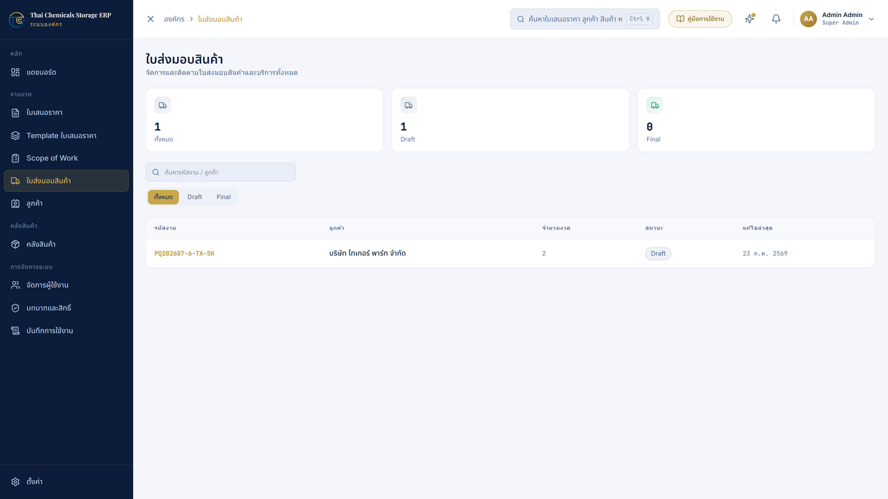
หน้ารายการใบส่งมอบสินค้า
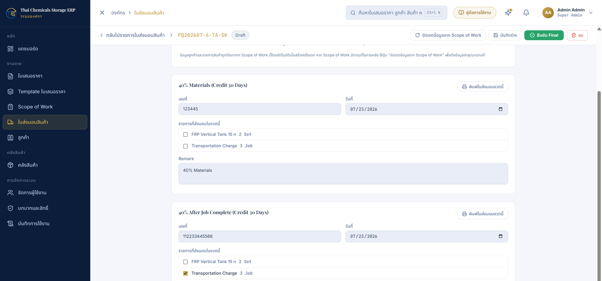
หน้ารายละเอียดใบส่งมอบสินค้า — การ์ดแยกตามงวดชำระเงิน แต่ละงวดมีช่องติ๊กรายการสินค้า
เลขที่/วันที่/Remark และปุ่ม "พิมพ์ใบส่งมอบงวดนี้" ของตัวเอง
7 คลังสินค้า (Products)
เพิ่มสินค้า — กด เพิ่มสินค้า กรอกชื่อ รหัส หมวดหมู่ หน่วย ราคา และรายละเอียดหมวดหมู่ — จัดการหมวดหมู่สินค้าได้จากปุ่มจัดการหมวดหมู่ในหน้าเดียวกันค้นหา/กรอง/เรียง — ค้นจากชื่อหรือรหัส กรองตามหมวดหมู่ เรียงตามคอลัมน์ได้ทำสำเนา — สร้างสินค้าใหม่จากตัวเดิมเพื่อแก้เล็กน้อยเก็บเข้าคลัง (Archive) — สินค้าเลิกใช้ให้เก็บเข้าคลังแทนการลบ ข้อมูลเดิมในใบเสนอราคาที่เคยใช้ไม่หาย
เชื่อมกับใบเสนอราคา: ตอนสร้างใบเสนอราคา กดปุ่มเลือกสินค้าเพื่อดึงจากคลังนี้ได้ทันที
ข้อมูลที่ดึงเป็น "สำเนา ณ ตอนนั้น" — แก้สินค้าในคลังภายหลังไม่กระทบใบเสนอราคาที่ออกไปแล้ว
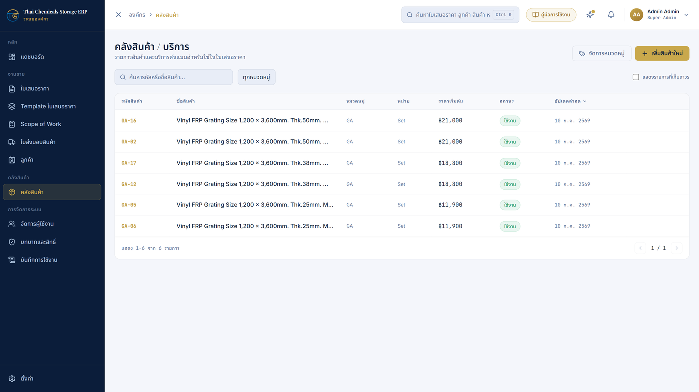
หน้าคลังสินค้า — รายการสินค้า ค้นหา/กรอง และปุ่มจัดการหมวดหมู่
8 ลูกค้า (Customers)
เก็บข้อมูลลูกค้า: ชื่อบริษัท ผู้ติดต่อ โทรศัพท์ อีเมล ที่อยู่ เลขผู้เสียภาษี ข้อมูลการจัดส่ง/โครงการ
กด เพิ่มลูกค้า เพื่อสร้าง แก้ไขโดยคลิกที่รายการ ลูกค้าที่เลิกติดต่อใช้ Archive
ในฟอร์มใบเสนอราคา ใช้ช่อง "เลือกลูกค้า" ดึงข้อมูลจากหน้านี้มาเติมอัตโนมัติ
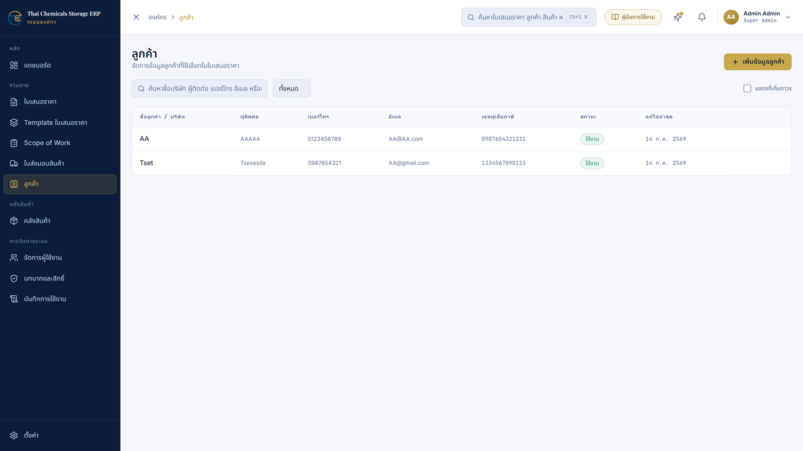
หน้าจัดการข้อมูลลูกค้า
9 Template ใบเสนอราคา
เก็บ "แม่แบบ" รายการสินค้า/สเปค/เงื่อนไขมาตรฐานของงานแต่ละประเภท ใช้ตอนสร้างใบเสนอราคาผ่าน Wizard
ผู้มีสิทธิ์สามารถ สร้าง แก้ไข ทำสำเนา เปิด-ปิดใช้งาน (เฉพาะ Template ที่ "ใช้งาน" จึงปรากฏใน Wizard)
การแก้ Template ไม่กระทบใบเสนอราคาที่สร้างไปแล้ว (ระบบคัดลอกเนื้อหา ณ ตอนสร้าง)
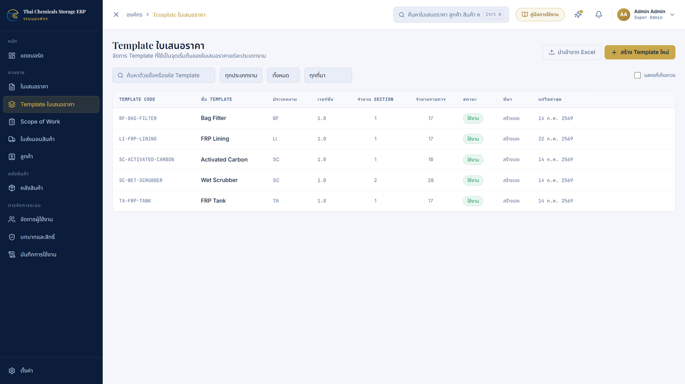
หน้าจัดการ Template ใบเสนอราคา
10 ส่วนผู้ดูแลระบบจัดการผู้ใช้งาน
เพิ่มผู้ใช้ — กรอกชื่อ อีเมล ชื่อผู้ใช้ รหัสผ่านเริ่มต้น เลือก บทบาท แผนก (Purchase / Project / Factory / Technic / Service / Accounting) และตำแหน่งแก้ไขข้อมูล รีเซ็ตรหัสผ่าน และ ปิดใช้งาน บัญชีพนักงานที่พ้นสภาพ (ปิดแล้วจะถูกล็อกออกทันทีในการใช้งานถัดไป)
แผนกของผู้ใช้ถูกใช้เป็นรายชื่อผู้รับใน "เอกสารส่งถึง" ของ Scope of Work — เลือกแผนกให้ถูกต้อง
บทบาทและสิทธิ์ (เฉพาะ Super Admin)
ระบบมีบทบาทมาตรฐาน เช่น Super Admin, Administrator, Approver, Sales User, Viewer
สร้างบทบาทใหม่และกำหนดสิทธิ์รายข้อได้จากตารางสิทธิ์ (เช่น ดู/สร้าง/แก้ไข/อนุมัติ/พิมพ์ ของแต่ละโมดูล)
สิทธิ์สำคัญที่ควรรู้: "ดู...ของผู้อื่น (viewAll)" — ถ้าไม่ติ๊ก ผู้ใช้เห็นเฉพาะเอกสารที่ตัวเองสร้าง
ข้อควรระวัง: เมื่อระบบอัปเดตและมี "สิทธิ์ตัวใหม่" เพิ่มเข้ามา บทบาทที่มีอยู่แล้วจะยังไม่ได้สิทธิ์นั้นโดยอัตโนมัติ —
Super Admin ต้องเข้าไปติ๊กเพิ่มในหน้า บทบาทและสิทธิ์ เอง มิฉะนั้นผู้ใช้จะไม่เห็นเมนู/ปุ่มใหม่
บันทึกการใช้งาน (Audit Log)
บันทึกเหตุการณ์สำคัญทั้งหมดในระบบ (ใครทำอะไรเมื่อไร) แบบอ่านอย่างเดียว แก้ไขหรือลบไม่ได้
ใช้ตรวจสอบย้อนหลัง เช่น ใครแก้ใบเสนอราคา ใครอนุมัติ ใครเข้าสู่ระบบ
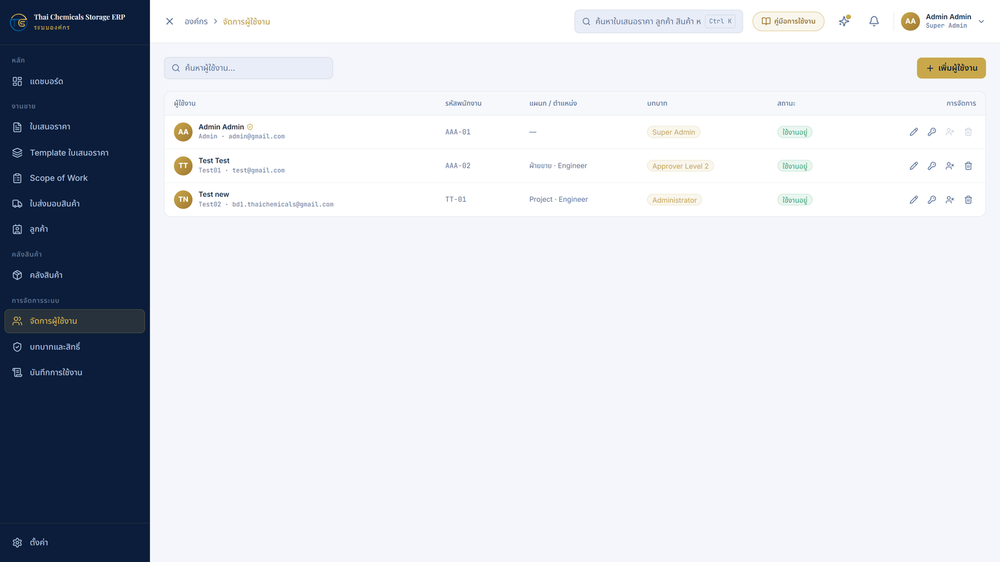
หน้าจัดการผู้ใช้งาน
11 ตั้งค่า (Settings)
แท็บ ใช้ทำอะไร โปรไฟล์ แก้ชื่อ อัปโหลดรูปโปรไฟล์ และ รูปลายเซ็น (ใช้แสดงบนเอกสาร เช่น ใบเสนอราคา/Scope of Work) รวมถึงเปลี่ยนภาษาไทย/อังกฤษ ข้อมูลบริษัท (เฉพาะ Super Admin) ชื่อ ที่อยู่ โลโก้ ตราประทับ เลขผู้เสียภาษี บัญชีธนาคาร เงื่อนไขท้ายเอกสาร — ข้อมูลนี้ปรากฏบนหัวเอกสารทุกใบ ความปลอดภัย เปลี่ยนรหัสผ่านของตนเอง การแจ้งเตือน เปิด/ปิดชนิดการแจ้งเตือนที่ต้องการรับ
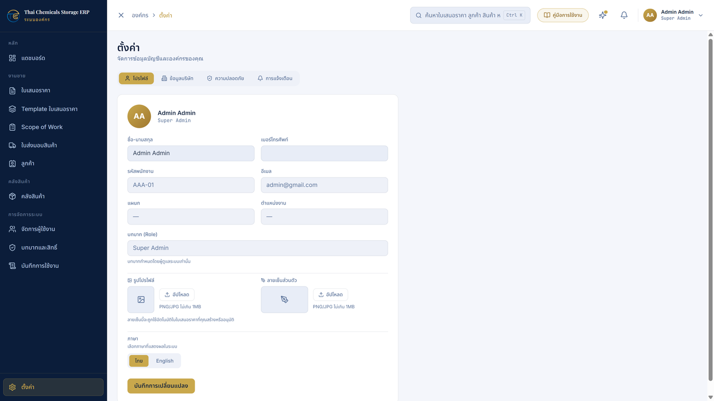
หน้าตั้งค่า
12 การพิมพ์เอกสารเป็น PDF
เปิดเอกสารที่ต้องการ แล้วกดปุ่ม พิมพ์ / PDF (ใบส่งมอบสินค้า: กดปุ่มพิมพ์ของงวดที่ต้องการ)
ในหน้าต่างพิมพ์ของเบราว์เซอร์ เลือกเครื่องพิมพ์จริง หรือเลือก "Save as PDF" เพื่อบันทึกเป็นไฟล์
ตรวจว่า กระดาษ = A4, แนวตั้ง, Margins = Default
ลิงก์เว็บ/วันที่ที่ขอบกระดาษ: สำหรับใบเสนอราคาและ Scope of Work หากพบข้อความ URL
ที่ขอบล่างของกระดาษ ให้ปิดตัวเลือก "Headers and footers" ในหน้าต่างพิมพ์ก่อนพิมพ์ —
ส่วนใบส่งมอบสินค้า ระบบจัดการให้อัตโนมัติแล้ว ไม่ต้องตั้งค่าใด ๆ
13 คำถามพบบ่อย (FAQ)
อาการ / คำถาม วิธีแก้ เข้าสู่ระบบไม่ได้ / ลืมรหัสผ่าน
ติดต่อผู้ดูแลระบบเพื่อรีเซ็ตรหัสผ่าน — ระบบไม่มีปุ่มลืมรหัสผ่านด้วยตนเอง ขึ้นว่า "เซสชันหมดอายุ"
ปกติของระบบเมื่อล็อกอินค้างไว้เกิน 7 วัน — เข้าสู่ระบบใหม่อีกครั้ง ไม่เห็นเมนู/ปุ่มที่คู่มือบอก
บัญชีของคุณไม่มีสิทธิ์ส่วนนั้น — แจ้งผู้ดูแลระบบให้ตรวจบทบาทและสิทธิ์ (โดยเฉพาะหลังระบบอัปเดตใหญ่ อาจต้องติ๊กสิทธิ์ตัวใหม่เพิ่ม) แก้ไขเอกสารไม่ได้ ปุ่มเป็นสีจาง
เอกสารอยู่ในสถานะที่ล็อกแล้ว (เช่น Final หรือเลยขั้นร่างของ workflow) หรือคุณไม่ใช่เจ้าของเอกสารและไม่มีสิทธิ์แก้ของผู้อื่น พิมพ์ใบส่งมอบสินค้าแล้วไม่มีรายการสินค้า
ยังไม่ได้ติ๊กเลือกสินค้าในงวดนั้น — ติ๊กอย่างน้อย 1 รายการ กดบันทึกร่าง แล้วพิมพ์ใหม่ ใบส่งมอบสินค้าไม่มีงวด Down Payment
ตั้งใจไว้เช่นนั้น — เงินมัดจำเป็นการชำระล่วงหน้า ไม่ใช่การส่งมอบสินค้า จึงไม่มีใบส่งมอบของงวดนี้ แก้ข้อมูลใบเสนอราคาแล้ว Scope of Work / ใบส่งมอบสินค้าไม่เปลี่ยนตาม
เอกสารปลายทางเก็บสำเนาข้อมูลของตัวเอง — เปิดเอกสารนั้นแล้วกดปุ่ม "อัปเดตข้อมูลจาก..." เพื่อดึงข้อมูลล่าสุด ตัวเลขบนแดชบอร์ดไม่ตรงกับยอดรวมในใบเสนอราคา
แดชบอร์ดแสดงมูลค่า "ก่อนภาษี" ส่วนใบเสนอราคาแสดงยอดรวมสุทธิ (รวม VAT) อยากรู้ว่าระบบอัปเดตอะไรใหม่บ้าง
คลิกไอคอน ✦ "มีอะไรใหม่" ที่แถบด้านบน — ประกาศอัปเดตสำคัญทั้งหมดอยู่ที่นั่น
ติดปัญหาอื่น: ติดต่อผู้ดูแลระบบของบริษัท พร้อมแจ้งหน้าจอ/เมนูที่ใช้อยู่
และข้อความแจ้งเตือนที่เห็น (ถ้ามี) เพื่อให้ช่วยตรวจสอบได้เร็วขึ้น